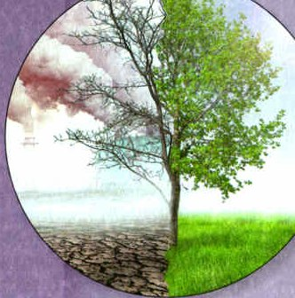
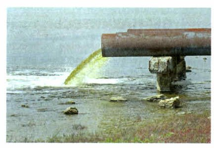
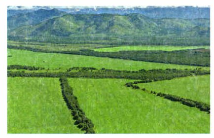
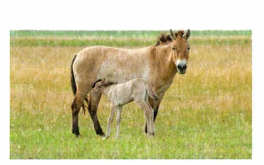

Как человек менял природу
С самого появления человек брал у природы всё нужное для жизни. Древние люди охотились и собирали растения — от этого страдали только отдельные виды.
Потом люди начали разводить домашних животных и сажать культурные растения. Тут воздействие на природу стало сильнее: рубили леса под пашни и пастбища, строили плотины, осушали болота, а на месте природных сообществ создавали искусственные. Некоторые виды вымерли совсем, многих стало намного меньше. Менялись и целые сообщества: степи и саванны превращались в пустыни, леса — в болота.
В XX веке человек стал влиять уже на всю биосферу. Учёный Владимир Иванович Вернадский сказал, что человечество превратилось «в геологическую силу планетарного масштаба».
Люди производят всё больше и не думают о последствиях. Многое из того, что взято у природы, возвращается в неё отходами — часто ядовитыми. А природные сообщества человек заменяет искусственными.
Влияние деятельности человека на природные сообщества. С самого момента своего появления как вида человек стал использовать богатства окружающей среды для удовлетворения своих жизненно важных потребностей. Древние люди в основном занимались охотой и собирательством. От такой деятельности человека страдали только отдельные виды растений или животных.
Постепенно люди начали разводить домашних животных и сажать культурные растения, пользуясь при этом продуктами, которые эти живые существа производили. С этого времени началось более сильное воздействие человека на природные сообщества — люди начали вырубать леса под пашни и пастбища, строить плотины на реках, осушать болота, а также создавать на месте естественных сообществ искусственные. Это сказалось на жизни многих обитателей нашей планеты — некоторые виды растений и животных под воздействием человека вымерли полностью, а численность многих других существенно сократилась. Изменения затронули и целые сообщества: степи и саванны начали превращаться в пустыни, леса — в болота, а некоторые участки пустынь — в небольшие рощицы.
В XX веке эти изменения нарастали, человек начал оказывать воздействие уже на всю биосферу. Именно тогда, как справедливо отметил отечественный учёный, создатель науки биогеохимии Владимир Иванович Вернадский, «человечество превратилось в геологическую силу планетарного масштаба, оказывающую воздействие на все оболочки Земли».
Стремясь к улучшению условий своей жизни, человек постоянно наращивает темпы производства, не задумываясь о последствиях. При таком подходе большая часть взятых от природы ресурсов возвращается ей в виде отходов, часто ядовитых или непригодных для утилизации. Кроме того, человек, преследуя свои экономические интересы, заменяет естественные экосистемы искусственными, что также может приводить к негативным последствиям.

▲ Сравни две половины дерева. Что случилось с землёй и небом слева?
1. Чем воздействие древних охотников на природу отличалось от воздействия земледельцев?
2. Что значит «человечество — геологическая сила»?
Экологические проблемы
Из-за деятельности человека в биосфере возникают экологические проблемы. Их делят на три уровня (схема ниже).
Местные (локальные): завод загрязнил своими отходами воздух, реку или озеро.
Региональные — на большой территории: загрязнены моря и бассейны рек, природа целых городов, огромные земли после аварии. Например, после аварии на Чернобыльской атомной станции местность заражена радиацией.
Глобальные проблемы возникают, когда человек меняет процессы во всей биосфере: потепление климата, истощение озонового слоя, массовое сведение лесов. О них ты узнаешь в старших классах. А сейчас — одна такая проблема: загрязнение.
Экологические проблемы биосферы. В результате деятельности человека в биосфере нашей планеты происходят изменения и возникают различные экологические проблемы. Принято выделять местные (локальные), региональные и глобальные экологические проблемы. Загрязнение атмосферы, реки, озера отходами какого-либо предприятия — пример местной экологической проблемы.
Загрязнение морей, речных бассейнов, природной среды городов, загрязнение обширных территорий в результате крупных техногенных аварий (например, радиоактивное заражение местности при аварии на Чернобыльской атомной станции) являются региональными экологическими проблемами.
Если деятельность человека существенно изменяет ход течения ряда процессов в биосфере, то возникают глобальные экологические проблемы. К ним можно отнести потепление климата, истощение озонового слоя, массовое сведение лесов и другие. С ними вы будете знакомиться в старших классах. Рассмотрим такую глобальную экологическую проблему, как загрязнение окружающей среды.
3. Чем местная экологическая проблема отличается от глобальной?
Загрязнение окружающей среды
Загрязнение — это появление в природе новых веществ из-за деятельности человека (рис. 115) или природных явлений, например извержения вулкана. Загрязнителями называют вещества, которых раньше не было в сообществе в таком количестве.
Загрязнение опасно не только для отдельных организмов — оно может разрушить всё сообщество. Нефть на поверхности небольшого озера создаёт плёнку, через которую не проходит воздух. Все обитатели водоёма гибнут от удушья.
Жители сообщества связаны друг с другом, поэтому загрязнитель из одного организма скоро окажется в теле многих. Соли ртути в воде глотают мелкие рачки, рачков ест рыба, а рыбу ловит и ест человек.
Всё, что люди выбрасывают в природу, возвращается к ним с пищей, водой и другими нужными вещами. Поэтому с загрязнением надо бороться.
Как? Например, перейти на безотходные технологии. На некоторых заводах на трубы ставят фильтры, и загрязнители не вылетают в воздух. Потом фильтры чистят, а пойманные ядовитые вещества превращают в безопасные — и снова используют. Часто яд разрушают особые микроорганизмы, которых для этого вывели учёные.
Загрязнение окружающей среды. Загрязнением называют появление в природной среде новых веществ (загрязнителей), вызванное деятельностью человека (рис. 115) или какими-либо природными явлениями (например, вулканической деятельностью). К загрязнителям же относят все те вещества, которые до процесса загрязнения не присутствовали в природных сообществах в таком количестве, как после него.
Основная опасность загрязнения состоит в том, что оно может не только нарушать жизнедеятельность отдельных организмов, но и разрушать целые природные сообщества. Например, попавшая на поверхность небольшого озера нефть создаёт непроницаемую для воздуха плёнку, которая приводит к гибели всех обитателей водоёма от удушья и, следовательно, уничтожению всего сообщества целиком.
Кроме того, поскольку обитатели любого сообщества всегда связаны друг с другом, попавший в один организм загрязнитель через какое-то время появится в теле большинства жителей сообщества. Например, оказавшиеся в воде соли ртути сначала заглатываются мелкими рачками, потом они оказываются в организме рыбы, питающейся этими рачками, а потом попадают в тело человека, поймавшего и съевшего эту рыбу.
Таким образом, загрязнения представляют собой опасность для всех обитателей нашей планеты, в том числе и для нас с вами, поскольку всё, что мы выбрасываем в окружающую среду, возвращается к нам с пищей, строительными материалами и другими необходимыми для нашей жизни ресурсами. Именно поэтому с загрязнениями необходимо бороться.
Можно ли предотвратить загрязнение окружающей среды? Конечно же, можно. Например, перейти на безотходные технологии. Этот способ уже используется на некоторых заводах и фабриках, на трубы которых ставятся специальные фильтры, препятствующие выходу загрязнителей в атмосферу. После использования эти фильтры очищаются, а задержанные ими ядовитые вещества превращаются в безопасные, которые вновь применяются на производстве. Часто в роли разрушителей ядовитых веществ используются специальные микроорганизмы, выведенные для этой цели учёными. При использовании таких фильтров опасность загрязнения сводится к минимуму.

▲ Это местная проблема или глобальная? Почему?
то, что происходит: в природе появляются новые вещества
само вещество: нефть, соли ртути, ядовитые отходы
Загрязнение — это событие, загрязнитель — вещество.
Сначала сделай опыт и запиши, что увидела.
4. В чём основная опасность загрязнения окружающей среды?
5. Почему сейчас необходим переход на безотходные технологии?
Ресурсы и как сохранить природу
Каждый год люди добывают около 100 миллиардов тонн руды, угля, нефти и сырья для удобрений. Нужно всё больше топлива, металлов и сырья, и запасы кончаются — это истощение ресурсов. Поэтому важно помнить правило: «Ресурсы ограниченны и не должны расходоваться впустую; нельзя бесконечно открывать новые ресурсы».
За последние сто лет люди научились исправлять вред, который наносят природе. Они восстанавливают леса, в степях сажают ветрозащитные посадки — и сильный ветер не сдувает почву (рис. 116). Исчезающие виды разводят в неволе, а потом возвращают в природу (рис. 117) — так спасли лошадь Пржевальского, о которой ты читала в §25.
В 1972 году в Стокгольме под эгидой ООН собрались представители 113 стран. Они приняли Декларацию по окружающей среде с правилами устойчивого развития: люди получают нужное, но природа при этом сохраняется. В таком обществе экономика стабильна, люди справедливы друг к другу, берегут природу и разумно тратят её богатства.
Человек — часть природы: он вредит ей и сам от этого страдает. В нашей стране приняты законы об охране природы и созданы особо охраняемые природные территории (о них — в §27). Но многое зависит от каждого человека. Хочется верить, что следующий этап можно будет назвать эпохой рационального природопользования.
Истощение ресурсов. Ежегодно люди добывают около 100 млрд т руды, угля, нефти и сырья для минеральных удобрений. Быстрый рост потребности в топливе, металлах, минеральном сырье и их добычи ведёт к истощению этих ресурсов. Поэтому нельзя забывать об экологическом принципе, который гласит: «Ресурсы ограниченны и не должны расходоваться впустую; нельзя бесконечно открывать новые ресурсы».
Как сохранить природу. За последние сто лет люди научились компенсировать ущерб, который наносит природным сообществам их деятельность. Они восстанавливают леса, в степях сажают ветрозащитные посадки, которые предотвращают сдувание почвы сильными ветрами (рис. 116). Человек научился разводить в неволе особей исчезающих видов растений и животных, а потом возвращать их обратно в дикую природу (рис. 117).
В 1972 году в Стокгольме под эгидой Организации Объединённых Наций прошла международная конференция, посвящённая проблемам окружающей среды. Представители 113 стран обсуждали необходимость перехода человечества к экоцентрическим отношениям с природой. Участники конференции единогласно приняли Декларацию по окружающей среде, которая содержит основные принципы устойчивого развития общества — развития, при котором сохраняется баланс между удовлетворением потребностей людей, с одной стороны, и возможностями окружающей среды, с другой стороны.
В обществе с устойчивым развитием существующее поколение поддерживает стабильную экономику, обеспечивает справедливость в отношениях между всеми членами общества, заботится об охране окружающей среды и разумно управляет использованием природных ресурсов.
Отрицательное влияние хозяйственной деятельности человека не проходит бесследно для природы. Человек, как часть природы, сам наносит ей вред и сам же страдает от этого. В нашей стране приняты законы об охране и рациональном использовании природы, созданы особо охраняемые природные территории. Однако многое зависит от осознания каждым человеком необходимости бережного отношения к окружающей среде, ответственности за её сохранение. Природные ресурсы нашей планеты весьма ограничены. Только знание и соблюдение законов природы даст нам возможность сохранить её многообразие.
Хочется верить, что воздействие хозяйственной деятельности человека на биосферу удастся снизить и следующий её этап можно будет назвать эпохой рационального природопользования.

▲ Найди полосы деревьев. Откуда может дуть ветер?

▲ Вспомни §25: чем её грива отличается от гривы домашней лошади?
6. К чему может привести вырубка лесов?
7. Что такое устойчивое развитие?
Итоги и «Моя лаборатория»
Загрязнение · Безотходные технологии · Рациональное природопользование
- В чём заключается основная опасность загрязнения окружающей среды?
- К чему может привести вырубка лесов?
- Почему в настоящее время необходим переход на безотходные технологии?
- Используя справочную литературу и Интернет, объясните значение термина «рациональное природопользование».
- Используя дополнительные источники информации, подготовьте сообщение на тему «Влияние деятельности человека на экосистему моего города (края)». Представьте сообщение в виде презентации.
Какие примеры рационального природопользования уже используются или планируются в вашем регионе?
1. Любой загрязнитель, выброшенный в природу, в конце концов окажется в организме человека. Поэтому лучше всего вообще не выбрасывать загрязнители — для этого и придумали безотходные технологии. Придумай свой пример безотходной технологии и обсуди его с одноклассниками и учителем. Подумай: не станет ли людям из-за неё труднее зарабатывать?
2. В истории бывало, что люди бездумно разрушали природу, на её месте возникали пустыни, и целые цивилизации исчезали. Узнай, какая экологическая обстановка в твоём регионе. Свяжись со службами охраны природы и экологическими объединениями своего района. Помоги искать, откуда берётся загрязнение.
1. Известно, что любой загрязнитель, выброшенный во внешнюю среду, в конце концов окажется в человеческом организме. Поэтому самый лучший способ избавиться от этой опасности — не выбрасывать во внешнюю среду вообще никаких загрязнителей. Именно поэтому люди изобрели безотходные технологии.
Предложите свой собственный пример безотходной технологии и обсудите его с товарищами и учителем. В процессе обсуждения попытайтесь учесть, не отразится ли внедрение такой технологии на экономическом благополучии людей.
2. Из истории мы знаем немало примеров, когда бездумная деятельность человека приводила к разрушению естественных экосистем, на месте которых возникали безжизненные пустыни, что влекло за собой исчезновение целых цивилизаций, процветавших ранее.
Выясните, какова экологическая ситуация в вашем регионе. Свяжитесь со службами охраны природы и экологическими объединениями в вашем районе. Примите участие в работе по выявлению источников загрязнения окружающей среды.
Проверь себя
Ошиблась — не страшно, попробуй другую кнопку.
Завод сливает отходы в одну речку
Загрязнена одна река.
Потепление климата
Меняется климат всей планеты.
Радиация после аварии на Чернобыльской АЭС
Заражена огромная территория вокруг станции.
Мусор на берегу одного пруда
Беда одного места.
Истощение озонового слоя
Озоновый слой окружает всю Землю.
Загрязнение целого моря
Большая территория, но не вся планета.
Массовое сведение лесов на Земле
Учебник называет его глобальной проблемой.
Фильтры на трубах завода
Загрязнители не вылетают в воздух.
Осушение болот
Гибнет сообщество болота.
Лесополосы вдоль полей
Ветер не сдувает почву.
Нефть, пролитая в озеро
Плёнка не пропускает воздух.
Разведение исчезающих видов в неволе
Так спасли лошадь Пржевальского.
Батарейка в обычном мусоре
Вредные вещества уйдут в почву и воду.
1. Почему нефть на озере губит всех его жителей?
2. Как ртуть из воды попадает в человека?
3. Что делают с ядовитыми веществами при безотходной технологии?
4. Зачем в степях сажают полосы деревьев?
5. Кто назвал человечество «геологической силой планетарного масштаба»?
6. Какая проблема глобальная?
Расскажи вслух
Как человек менял природу
- Охота и собирательство — страдали отдельные виды.
- Земледелие и скотоводство — вырубка лесов, плотины, осушение болот.
- XX век — человек влияет на всю биосферу (Вернадский).
Экологические проблемы
- Местные — одна река или озеро.
- Региональные — моря, города, Чернобыль.
- Глобальные — потепление, озоновый слой, сведение лесов.
- Мой пример — «цветение» Волги у Ягодного.
Загрязнение
- Что такое загрязнение и загрязнитель.
- Нефть на озере — гибнет всё сообщество.
- Ртуть идёт по пищевой цепи до человека.
- Безотходные технологии и фильтры.
Как сохранить природу
- Ресурсы ограниченны.
- Восстановление лесов, лесополосы, разведение в неволе.
- Стокгольм, 1972: устойчивое развитие.
- Рациональное природопользование.